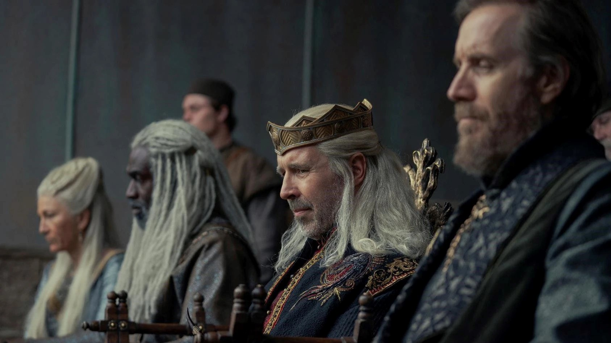
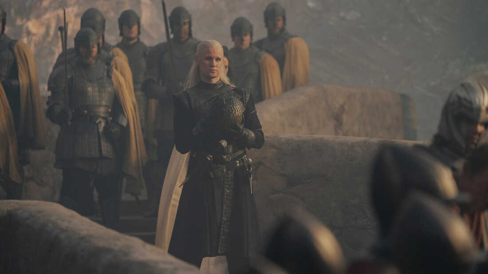
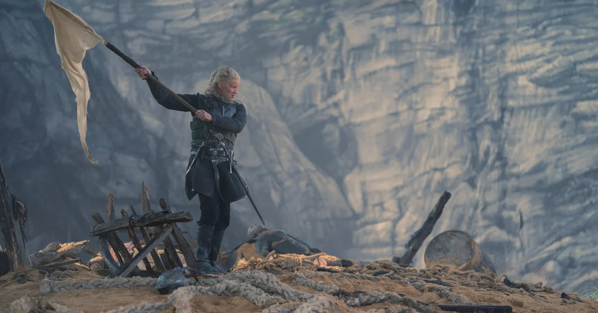
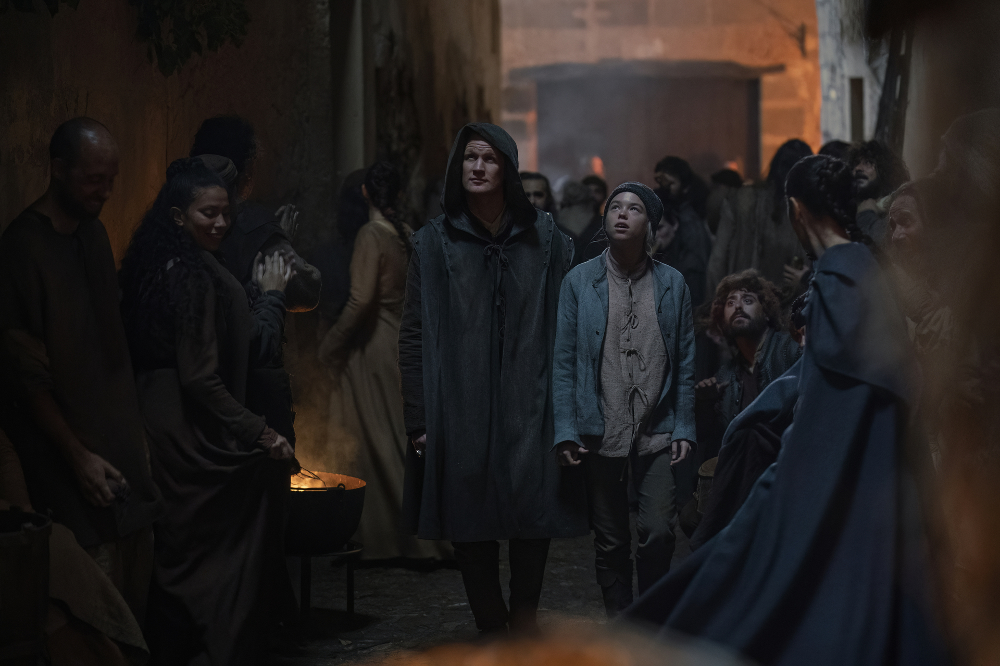
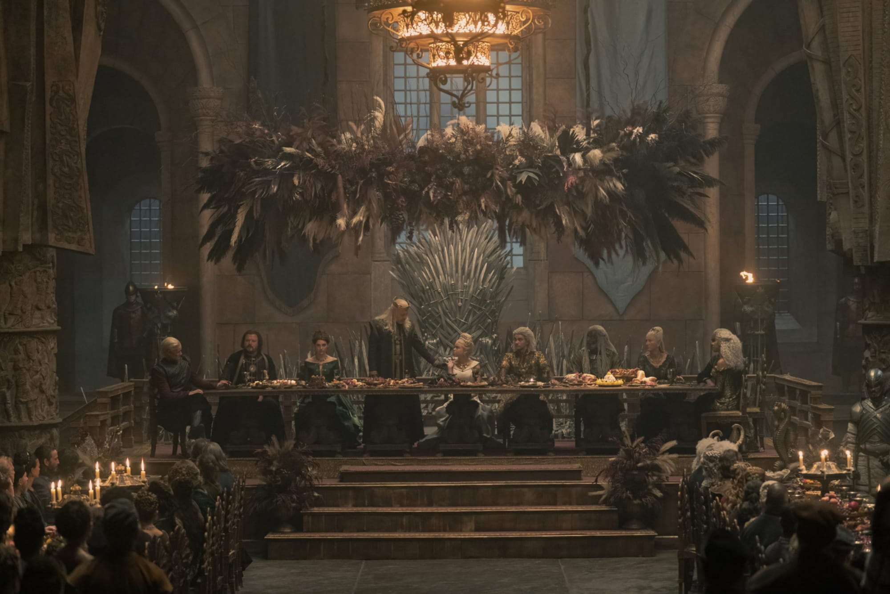
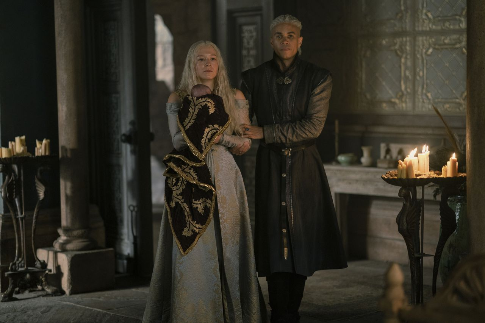
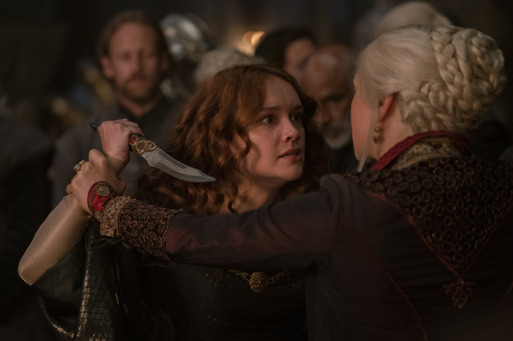
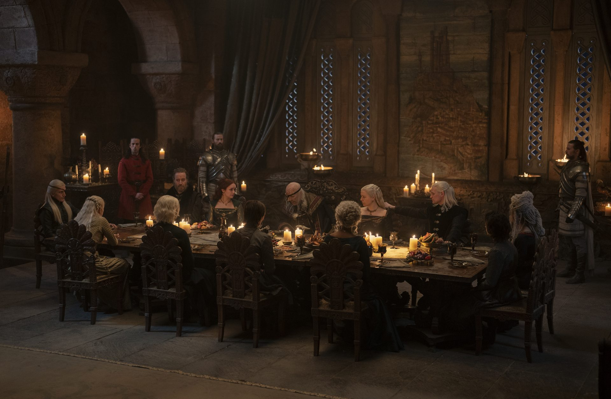
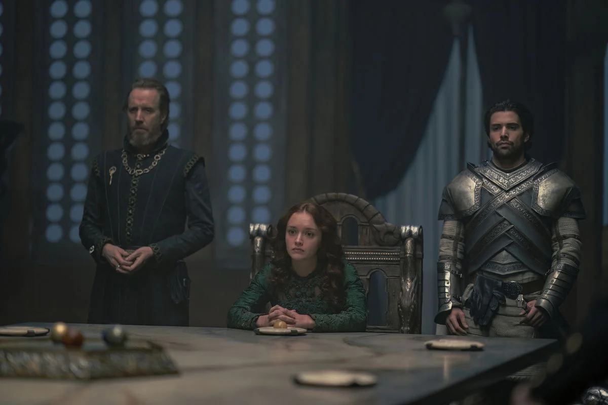
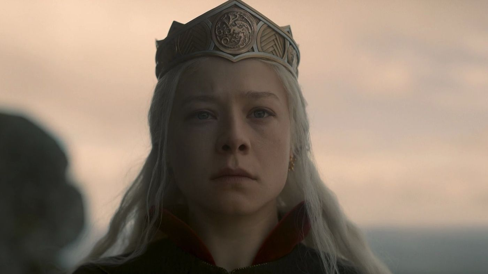

Episode 1:
The Heirs of the Dragon (Dedici Draka)

Po smrti obidvoch synov, starý kráľ Jaehaerys I Targaryen zvolá Veľký Koncil, aby zvolil následníka.
Lordi Westerosu zvolia za následníka jeho najstaršieho vnuka, princa Viserysa, namiesto jeho najstaršieho potomka (vnučky), princeznej Rhaeny.
Kráľ Viserys, po deviatich rokoch svojej vlády, zorganizuje turnaj na oslavu tehotenstva Kráľovnej Aemmy Arryn, v presvedčení, že čaká syna - eho vysneného následníka.
Pomedzi to Malá Rada odmietne Lorda Corlysa Velaryona, majstra loďstva, ktorý varuje Triarchiu pred alianciou Slodobodných miest Essosu.
Pravá ruka kráľa, ser Otto Hightower, kritizuje Viserysovho brata a následníka, Princa Daemona, za jeho brutalitu na pozícii veliteľa Zlatých Plášťov - Mestskej Hliadky.
Na kráľovom turnaji, ser Criston Cole, rytier z bežnej rodiny, porazí Daemona, zatiaľ čo Aemma zomiera pri pôrode. Krátko na to umiera aj jej novonarodený syn.
Vyserys odmieta vyhlásiť nového následníka, pokiaľ ser Otto neoznámi, že Daemon bol rebelsky označený za "Následníka Dňa".
Nahnevaný Viserys vykáže Daemona z hlavného mesta a za následníka vyhlási jeho jediného potomka, princeznú Rhaenyru Targaryen.
Episode 2:
The Rogue Prince (Neposlušný Princ)

Šesť mesiacov po tom, čo bola Rhaenyra prehlásená za následníčku, Daemon nelegálne okupuje Dračí Kameň, podporený Mestskou Hliadkov.
Keď Admirál Craghas Drahar, taktiež známy ako "Kŕmič Krabov", napadne Kameňoschody, Rhaenyra odporúča ukázať silu. Malá Rada
to odmieta a namiesto toho ju posiela vybrať nového člena Kráľovskej Gardy. Po ingnorovaní rád
ostatných, Rhaenyra vyberá sera Criston-a, ako jediného rytiera, ktorý má skúsenosti z reálnej
bitky, nie len z turnajov. Ser Otto posiela svoju nástiletú dcéru, Lady Alicent, aby súkromne navštívila a utešila
Kráľa. Alicent Kráľovi radí, aby sa porozprával s jeho dcérou Rhaenyrou o tom, že by sa znovu oženil.
Lord Corlys a jeho žena, Princezná Rhaenys, navrhne Viserysovi, aby upevnil ich Valyrijské vzťahy svadbou s ich 12 ročnou
dcérou Leanou. Pomedzito sa Malá Rada dozvedá o tom, že Daemon sa prehľasuje za právoplatného dediča,
o ukradnutom dračom vajci a o tom, že sa chystá oženiť s jeho milenkou Mysariou. Rhaenyra odletí na jej drakovi (Syrax) a
donúti strýka vrátiť jej dračie vajce a odvolať jeho nároky. Na konci epizódy sa dozvedáme, že Viserys si za manželku
zoberie Lady Alicent, čo nahnevá Lorda Corlysa a ten sa následne vydá za Daemonom, aby vytvorili Alianciu.
Episode 3:
Second of His Name (Druhý svojho mena)

Na Kameňoschodoch narastá konflikt ďalšie 3 roky. Lord Corlys a Princ Daemon bojujú proti
Craghasovi Draharovi a jeho spoločníkom (pirátom) bez kráľovej pomoci. Pomedzi to Kráľ Viserys vyhlási veľkú poľovačku
na počesť jeho tehotnej ženy Kráľovny Alicent a svojho 2-ročného syna Aegona. Rhaenyre sa nepáči príliš veľký záujem otca o jej nevlastného
brata Aegona. Kráľ núti Rhaenyru, ktorá má už 17 rokov, aby sa vydala a upevnila vzťahy s mocným rodom,
aby tak zabezpečila svojej pokrvnej línii. Záujemcov je veľa, dokonca sa medzi nimi nachádza aj jej brat Aegon. Lord Lyonel Strong
odporúča Sera Laenora Velaryona, syna Lorda Corlysa, ako potencionálneho partnera na upevnenie dvoch najmocnejších rodov Západozemia.
Viserys dáva zvolenie Rhaenyre, aby si sama vybrala svojho manžela. Popritom bratia Hobert a Otto Hightower potajme plánujú
urobiť následníkom Aegona, aby utvrdili rodinnú moc a povesť. Po tom, ako Ser Vaemond Velaryon požiada Kráľa o pomoc, Viserys vysiela
vojsko na Kameňoschody. Keď Princ Daemon dostane správu od jeho brata, že mu idú na pomoc, od hnevu sa rozhodne ukázať bratovi,
že to zvládne aj bez jeho pomoci. Podarí sa mu poraziť Kŕmiča Krabov a vyhrať niekoľko ročnú bitku.
Episode 4:
King of the Narrow Sea (Kráľ Úzkeho Mora)

Rhaenyra sa vracia do Kráľovského mesta po niekoľko mesačnej snahe nájsť si vhodného partnera.
Vracia sa aj Daemon po vyhraní bitky o Kameňoschody, pomenovaný ako "Kráľ Úzkeho Mora". Deamon odprisahá
vernosť Viserysovi a dáva mu korunu. Keď Alicent vidí, ako sa dvaja rozhádaní bratia opäť udobria, pocíti stratu
priateľstva s Rhaenyrou. Keď nastane noc, Daemon a Rhaenyra sa vydávajú do mesta, aby objavili jeho zákutia - alkohol, bábkové divadlo, či bordel.
Daemon pocíti túžbu po Rhaenyre, no po uvedomení si jej postavenia ju tam necháva. Po návrate do
Červenej Bašty Rhaenyra v návale túžby zvedie Sera Cristona. Otto Hightower, pravá ruka kráľa sa dozvedá o tom, že Rhaenyra sa
v noci vytratila do mesta s Daemonom. Otto povie kráľovi o tom, čo sa medzi nimi v noci udialo. Alicent to zachytí a stretne sa s Rhaenyrou, aby zistila,
či je to pravda. Viserys pomedzi to konfrontuje Daemona, ktorý mu hovorí o tom, ako si privlastnil svoju neter a že si ju chce vziať za ženu.
Viserys vyhlási, že mu ide iba o korunu a opäť ho vykáže. Aby sa vyhli škandálu, Viserys káže Rhaenyre,
aby sa vydala za Sera Laenora Velaryona. Viserys tkatiež vykáže Otta a zoberie mu právomoc pravej ruky v domienke toho, že s ním
manipuluje a ide mu o vlastné ciele. Majster Mellos dáva Rhaenyre čaj, na rozkaz kráľa, aby predišla tehotenstvu.
episode 5:
We Light the Way (Svietime na Cestu)

Vo Vale (časť Západozemia) Daemon zabije svoju manželku, Lady Rheu Royce. Rhaenyra a Ser Laenor Velaryon sú prehlásených za zasnúbených.
Nakoľko Rhaenyra vie o Laeronovej náklonnosti k rovnakému pohlaviu, spravia medzi sebou dohodu, že manželstvo bude len oficiálne a že si
len splnia povinnosť priniesť na svet následníkov, ale inak sa Laenor môže stretávať s jeho milencami.
Ser Criston následne požiada o ruku Rhaenyru a hovorí jej o jeho plánoch, ako spolu ujdú do Essosu a príjmu nové identity.
Rhaenyra však preferuje ich doterajší vzťah. Ešte pred ich priplavením do Kráľovho Prístavu, Ser Otto varuje Alicent, že korunovanie Rhaenyry urobí z Alicentiných detí návnadu.
Alicent sa rozhodne opýtať Cristona, či vie niečom ohľadom Rhaenyry a Daemona, no on v domienke toho, že sa pýta na neho, prizná svoj vzťah ku princezne.
Počas osláv zásnub Rhaenyry a Laenora, Alicent vstupuje do siene, počas Viserysového prípitku, oblečená v zelených šatách na znak svojho rodu. Taktiež nečakane prichádza Daemon.
Konfrontuje ho Rhein bratranec, že ju zabil, čo však Daemon odmieta a tvorí si nárok na jej územia. Laenorov milenec, Ser Joffrey Lonmouth tvrdí, že Criston je Rhaenyryn milenec.
Keď sa o tom dozvie Criston, brutálne ho zabije, čím raní Laenora a šokuje hostí. Rhaenyra a Leanor sa potajme zoberú ešte v tú noc. Viserys po ceremónii odpadne. Pomedzi to, Alicent nájde Cristona, ako sa snaží
spáchať samovraždu a zastaví ho.
episode 6:
The Princess and the Queen (Princezná a Kráľovná)

10 rokov neskôr mala Rhaenyra 3 deti - Jacaerysa, Lucerysa a novorodeného Joffreyho.
Všetkým chýbala Targaryen/Velaryonská platinová farba vlasov, ale Kráľ neverí Kráľovniným tvrdeniam o tom, že synovia nie sú Sera Laenora.
Alicent dohovára synovi Aegonovi, že sa musí pripraviť na to, že jedného dňa bude bojovať proti Rhaenyre o trón. Daemon a jeho žena,
Laena Velaryon, navštívia Pentos s ich dvoma dcérami Baelou a Rhaenou.
Princ im ponúka loďstvo výmenov za alianciu proti Triarchii. Laena sa chystá porodiť, avšak kvôli komplikáciám je odsúdená na smrť.
Chce však zomrieť ako dračí jazdec, preto rozkáže jej drakovi Vhagar, aby ju spálil.
Ser Criston, ktorý teraz slúži Alicent, zaútočí na Sera Harwina s tvrdením, že je otcom Rhaenyrých detí.
Aby utíšili túto situáciu, Rhaenyra navrhne, aby sa Helaena vydala za Jacaerysa, čo však Alicent odmieta.
Viserys odmietne vzdanie sa moci pravej ruky Serom Lyonelom Strongom, ale dovolí mu odísť na Harrenhal.
Alicent povie synovi Lyonela Stronga, Larysovi, že si želá, aby jej otec bol stále pravou rukou Kráľa.
Larys oslobodí troch kriminálnikov, aby rozpútali požiar v Harrenhale a zabili tak Lyonela a Harwina.
Rhaenyra odchádza s rodinou na Dračí Kameň. Berú so sebou aj Laenorovho milenca, Sera Qarla Correya.
Episode 7:
Driftmark

Kráľ Viserys a jeho družina sa účastnia Laeninho pohrebu v Driftmark-u.
Rhaenyra a Daemon sa opäť spoja, psychicky aj fyzicky. Pomedzi to sa Viserys nezvládne spojiť s Daemonom.
Prince Aemond získa Vhagar ako svojho draka, čo berie ako náhradu za oko, ktoré mu jeho synovec Lucerys zasiahne nožom.
Alicent povzbudená pomstou berie Viserysovu dýku a zaútočí na Lucerysa, aby mu vyrezala oko. Rhaenyra ju zastaví, avšak nôž zasiahne jej ruku.
Po rečiach o tom, že Rhaenyry synovia sú bastardi, Viserys vyhlási, že ktokoľvek kto bude spochybňovať ich krv, bude odsúdený.
Neskôr Otto Hightower, ktorý je opäť pravou rukou kráľa, ubezpečuje Alicent o tom, že zabezpečí spojenectvá.
Rhaena chce, aby pravá Velaryonská krv zostala pri vláde, tak sa snaží prehovoriť Lorda Corlysa, aby za následníka prehlásil ich vnučku Baelu, ktorá by sa vydala za
Lucerysa, nakoľko Laenor nemal žiadnych potomkov. Ser Qarl je obvinený z vraždy Laenora. Rhaena a Corlys veria tomu, že obhoren telo, čo sa našlo patrí ich synovi.
Daemon a Rhaenyra sa potajme vezmú podľa starej Valýrijskej tradície, aby zabezpečili čistotu svojej Targaryenskej krvi.
Po sfalšovaní svojej smrti, Laenor potajme odchádza z Driftmark-u s Qarlom.
Episode 8:
The Lord of the Tides (Lord Vĺn)

Šesť rokov neskôr Lord Corlys Velaryon neustále bojoval o Kameňoschody. Jeho brat, Ser Vaemond, prichádza do Kráľovho Prístavu, aby
bol prehlásený za následníka. Rhaenyra a Daemon prichádzajú taktiež, aby podržali stranu jej synovi Lucerysovi.
Kráľ je už veľmi chorý. Kráľovná Alicent a kráľova pravá ruka Otto Hightower prebrali všetky moci.
Alicent kryje svojho syna Aegona, ktorý znásilnil jeho slúžku. Rhaenyra dá návrh rodu Velaryon, aby spečatili ich spojenectvo dvoma svadbami, ak ju podržia pri súde.
Taktiež žiada Viserysa, aby sa zastal jej nároku, citujúc sen Aegona Dobyvateľa o Princovi, ktorý bol prisľúbený.
Počas toho, ak Veamond prezentuje svoj návrh, do miestnosti vstupuje kráľ a prehlási Lucerysa za dedica Driftmark-u.
Vaemond prehlási, že Rhaenyryne deti nie sú jeho krvi, za čo mu Daemon odtne hlavu. Viserys požiada svoju rodinu o to, aby sa spolu navečerali.
Tam všetkým povie o svojom zdravotnom stave. Aemond označí Rhaenyryne deti za nemanželské.
Na smrteľnej posteli Viserys zašepká časti sna Aegona Dobyvateľa, čo si Alicent spojí s ich synom Aegonom.
episode 9:
The Green Council (Zelený Koncil)

Po Viserysovej smrti Ser Otto a Malá Rada sa rozhodli korunovať Princa Aegona.
Ser Criston zabije Lorda Beesburyho, keď sa rozhodne oponovať. Harrold Westerling, člen kráľovskej gardy, sa rozhodne rezignovať na protest.
Otto zanecháva kráľovu smrť v tajnosti, aby mali možnosť najprv naplánovať Aegonovu korunováciu.
Tí, čo sa rozhodli protirečiť skončili vo väzení alebo obesení. Otto a Alicent sa nezhodnú na tom, či zabiť Rhaenyru a preto sa rozhodnú zohnať na svoju stranu čo najviac spojencov.
Popritom sa každý z nich sám snaží nájsť Aegona: Otto posiela bratov z kráľovskej gardy, Sera Erryka a Sera Arryka Cargyll,
zatiaľ čo kráľovná posiela Cristona a princa Aemonda. Cargyllovci nájdu Aegona skôr, avšak Criston a Aemond im ho násilím zoberú.
Lord Larys hovorí Alicent, že špióni, vrátane Talye, čakajú v Červenej Bašte. Aegon sa nechce stať kráľom, ale Alicent ho presviedča o opaku.
Obyvatelia Kráľovho Prístavu sú nahrnutí do Dračieho Hniezda, aby videli Aegonovu korunováciu.
Princezná Rhaenys, ktorá odmieta podporiť Aegona ako kráľa, je uväznená vo vlastných komnatách. Erryk ju oslobodí a spolu vstúpia do Dračieho Hniezda.
Tam sa vydá za svojou dračicou Meleys, vzlietne na nej do hlavnej sály, čím spôsobí rozruch. Tam konfrontuje svojich nepriateľov a následne odlieta preč.
episode 10:
The Black Queen (Čierna Kráľovná)

Princezná Rhaenys prichádza na Dračí Kameň, aby oznámila smrť kráľa a pomazanie Princa Aegona, aby zasadol na trón.
Tieto správy spustia Rhaenyre potrat, zatiaľ čo Daemon navrhuje vojnu. Keď Der Erryk prinesie Viserysovu korunu,
Rhaenyra je prehlásená za kráľovnú. Ser Otto posiela Rhaenyre podmienky. Ona predĺži čas na odpoveď. V súkromí je Daemon
nahnevaný, že Rhaenyra zvažuje pristúpiť na podmienky kvôli snu Aegona Dobyvateľa. Lord Corlys odprisahá vernosť Rhaenyrynej "Čiernej" strane, na čo sa Daemon chystá zapriahnuť čo najviac drakov a jazdcov.
Princovia Jacaerys a Lucerys sú poslaný, aby zabezpečili alianciu s rodmi Arryn, Stark a Baratheon.
Lucerys priletí k Lordovi Borrosovi Baratheonovi a zisťuje, že tam už pred ním prišiel Aemond. Aegon chce upevniť vzťahy s Bartheonovcami svadbou Aemonda, avšak Rhaenyra poslala
Lucerysa s prázdnymi rukami. Aemond zažiada Lucerysovo oko, aby splatil dávny dlh. Borros Baratheon zakazuje danú činnosť pod jeho strechou a tak Lucerys odlieta preč na jeho drakovi Arraxovi.
Vaemond ho však nasleduje na Vhagar. Nakoľko chce Arrax chrániť svojho jazdca, tak sa snaží zastrašiť Vhagar tým, že ju popáli. Vhagar mu to však vracia tým, že zabije Arraxa aj Lucerysa, zatiaľ čo Aemond
nie je schopný žiadnej reakcie. Pre Rhaenyru sú tieto správy devastujúce.